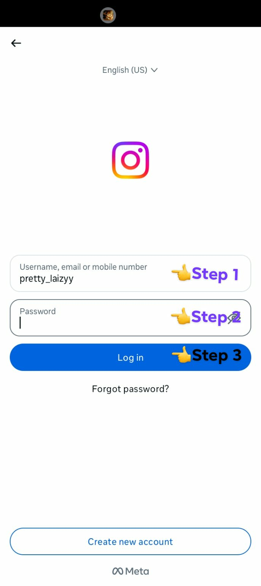

What do you want to do next?
"Anu it imo karuyag buhaton sunod?"
Try "Testingan" Information about app
"Impormasyon hit applikasyon" Return
"Balik"

What is INSTAGRAM?
"Anu ba itun INSTAGRAM?"
Instagram is a social media platform focused on photo and video sharing. Users can post content, edit it
with filters, and interact with others through likes, comments, and direct messaging. It also features
"Stories" temporary posts that disappear after 24 hours.
Instagram, originally named Burbn, was co-founded by Kevin Systrom and Mike Krieger and launched on
October 6, 2010. It started as a mobile photo-sharing app with filters and quickly gained popularity,
reaching one million users within three months. The platform was acquired by Facebook in April 2012 for
one billion dollars. Instagram has since expanded its features to include videos, stories, and shopping
functionalities.
An Instagram usa nga social media platform nga nakatutok ha pagpaangbit hin mga retrato ngan bidyo.
Pwede mag-post an mga gumaramit hin sulod, ig-edit ini pinaagi hin mga filter, ngan
makig-interaksyon ha iba pinaagi hin mga “like”, komento, ngan direkta nga mensahe. May-ada liwat
ini “Stories” — mga temporaryo nga post nga nadudula ha sulod hin 24 oras.
An Instagram, nga orihinal nga gintawag nga Burbn, gintukod ni Kevin Systrom ngan Mike Krieger ngan
opisyal nga ginlansar han Oktubre 6, 2010. Nagtikang ini komo usa nga mobile app para ha pagpaangbit
hin mga retrato nga may mga filter, ngan madagmit ini nga nagin popular, nakab-ot hin usa ka milyon
nga gumaramit ha sulod la hin tulo ka bulan. Ginpalit han Facebook an plataporma han Abril 2012 para
hin usa ka bilyon nga dolyar. Tikang hadto, nagdugang na an Instagram hin iba nga mga feature sugad
han mga bidyo, stories, ngan mga pamaagi para ha online shopping.

GUIDE/STEPSGabay/Hakbang
How to Log in?Paano mag log in?
1: Put your email/number on the blank field.
Ibutang ha blanko an imo email o numero
2: Put your password on the next blank field.
Ibutang sa sunod nga blanko an imo
password
3: Click the Log In to get start.
Pinduta itun "Log in" para makag tikang